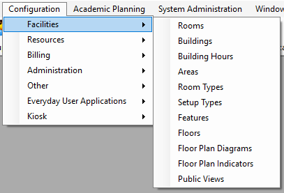

Before you can use
Facilities Drop-Down Menu

Note: Floor Plan Diagrams and Floor Plan Indicators are optional features used when your organization has the optional add-on, EMS Floor PlansEMS Floor Plans.
This section will include information on the following:
Note: If your organization has purchased and installed EMS Desktop Client — Academic Planning, then you can synchronize data from your Student Information System (SIS) such as your campus buildings, rooms, and room types. As a result, before you carry out any configuration of your facilities data, see the EMS Desktop Client — Academic Planning Configuration GuideEMS Desktop Client — Academic Planning Configuration Guide.